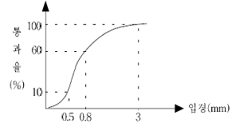

환경기능사 (2005-10-02 기출문제)
1과목: 대기오염방지
1. 후우드(hood)에 의한 일반적 흡인요령으로 알맞지 않은 것은?
- 충분한 포착속도를 유지한다,
- 후우드의 개구면적을 가능한 한 크게 한다.
- 가능한 한 후우드를 발생원에 근접시킨다.
- 국부적인 흡인방식을 택한다.
(정답률: 76%)

2. 다음 중 일반적인 대기속에 가장 많은 량(부피)이 함유되어 있는 성분은?
- 아르곤
- 네온
- 오존
- 이산화탄소
(정답률: 62%)
3. 연료가 연소할 때 발생하는 유리탄소가 응결하여 지름이 1㎛이상이 되는 입자상 물질을 무엇이라 하는가?
- 매연(smoke)
- 검댕(soot)
- 훈연(fume)
- 미스트(mist)
(정답률: 78%)
4. 다음 중 흡수장치의 흡수액이 갖추어야 할 조건으로 옳지 않은 것은?
- 용해도가 작아야 한다.
- 점성이 작아야 한다.
- 휘발성이 작아야 한다.
- 화학적으로 안정해야 한다.
(정답률: 72%)
5. 분자식 CmHn인 탄화수소 가스 1Sm3당 완전연소시 필요한 이론 산소량은?(단, mole 기준)
- m +n
- m +(n/2)
- m +(n/4)
- m +(n/8)
(정답률: 60%)
6. 0℃, 760mmHg에서의 가스량이 100,000m3/hr이라 할 때 500℃,740mmHg에서의 가스량(m3/hr)은 얼마인가?
- 275,699
- 290,803
- 390,803
- 490,803
(정답률: 36%)
7. 황성분 1%인 중유를 20ton/hr로 연소시킬 때 배출되는 SO2를 석고(CaSO4)로 회수하는 경우 부산물의 생산량은?(단, 연소율 : 100%, 탈황율 : 90%,원자량S: 32, Ca: 40)
- 350kg/hr
- 385kg/hr
- 765kg/hr
- 850kg/hr
(정답률: 42%)
8. 어떤 집진장치 2개가 직렬로 연결되어 있을 때 1차 집진장치에서 90%,2차 집진장치에서 95%의 집진효율이라면 총집진효율(%)은 얼마인가?
- 97.5%
- 98.5%
- 99.5%
- 99.9%
(정답률: 53%)
9. 대기오염공정시험방법에서 방울수의 설명이 옳게 된 것은?
- 15℃에서 정제수 10방울을 떨어뜨릴 때 그 부피가 약 1ml 된다는 뜻
- 15℃에서 정제수 20방울을 떨어뜨릴 때 그 부피가 약 1ml 된다는 뜻
- 20℃에서 정제수 10방울을 떨어뜨릴 때 그 부피가 약 1ml 된다는 뜻
- 20℃에서 정제수 20방울을 떨어뜨릴 때 그 부피가 약 1ml 된다는 뜻
(정답률: 67%)
10. 도시지역에서 오염된 공기가 상승하면서 주변의 찬공기가 도시로 유입되어 오염물질의 거대한 지분을 형성하는 것을 무엇이라 하는가?
- 오존층 파괴
- 스모그(smog)상승 현상
- 열섬효과(heat island effect)
- 온실효과(green house effect)
(정답률: 66%)
11. 유량이 일정하고 입구가스의 먼지농도가 15g/m3일 때 집진효율이 98%라면 출구가스 중의 먼지 농도는 얼마 인가?
- 0.10g/m3
- 0.20g/m3
- 0.30g/m3
- 0.40g/m3
(정답률: 44%)
12. 다음 집진장치 중 집진효율이 가장 낮은 것은?
- 중력집진장치
- 전기집진장치
- 여과집진장치
- 원심력집진장치
(정답률: 65%)
13. 대기오염물질 중 무색의 기체로서 특유한 자극성 냄새를 갖고 있으며 20℃, 8.8기압에서 액화하며 융점 -77.7℃, 비등점 -33.35℃로 물에 용해되며 발생원은 비료공장, 냉동공장, 색소제조공정중에서 발생되는 오염 물질은?
- 일산화탄소(CO)
- 염소(Cl2)
- 암모니아(NH3)
- 아황산가스(SO2)
(정답률: 53%)
14. 어느 집진장치의 압력손실이 400mmH2O, 처리가스량이 50m3/sec인 송풍기 효율이 72%일 때 이 송풍기의 소요 동력은?
- 202 kw
- 261 kw
- 273 kw
- 296 kw
(정답률: 48%)
15. 화력발전소에서 많은 량의 아황산가스(SO2)가 배출 되고 있다. 이의 저감방법이 아닌 것은?
- 저유황 연료사용
- 고연돌 사용
- 배기가스 탈황설비 설치
- 연료중에 있는 유황분 제거
(정답률: 61%)
2과목: 폐수처리
16. 용존산소에 가장 민감하다고 볼수 있는 미생물은?
- Bacteria
- Rotifer
- Sarcodina
- Ciliate
(정답률: 31%)
17. 여과사의 체분석 결과 다음 그림과 같은 도표를 얻었다. 이 여과사의 균등계수는 얼마인가?

- 6
- 3.75
- 1.6
- 0.625
(정답률: 33%)
18. 지하수의 특징으로 틀린 것은?
- 유속이 대체로 느리다.
- 국지적인 환경조건의 영향이 적다.
- 세균에 의한 유기물의 분해가 주된 생물작용이 된다.
- 연중 수온의 변화가 매우 적다.
(정답률: 61%)
19. 하수고도처리를 위한 A2/O 공법의 조구성에 해당되지 않는 것은?
- 혐기조
- 혼합조
- 포기조
- 무산소조
(정답률: 41%)
20. 식료품 가공공장에서 제품 1ton을 가공 생산하는데 100m3의 폐수가 발생한다. 이에 따른 폐수의 평균 BOD는 몇 mg/ℓ인가?(단, 제품 생산량 400ton/day, BOD배출량5,000kg/day)
- 100
- 125
- 150
- 200
(정답률: 33%)
21. 다음 중 해역에서 적조의 주된 발생원인 물질은?
- 수은
- 산소
- 염소
- 질소
(정답률: 61%)
22. 직경이 30cm인 하수관에 유량20m3/min의 하수를 흘려보낸다면 유속은?(단, 하수관 단면적 모두에 하수가 가득 찬다고 가정함)
- 약 3.2m/sec
- 약 4.7m/sec
- 약 6.5m/sec
- 약 8.3m/sec
(정답률: 33%)
23. 포기조의 유입수량은 2000m3/일이고 BOD총량은 250kg/일 일 때, BOD 용적부하율 0.4kg/m3,일로 하였다. 포기조 체류시간은 얼마인가?
- 12.5시간
- 10.5시간
- 8.5시간
- 7.5시간
(정답률: 24%)
24. pH가 3.5인 용액의 [H+]는 몇 mole/ℓ 인가?
- 2.36 × 10-4
- 2.86 × 10-4
- 3.16 × 10-4
- 3.46 × 10-4
(정답률: 47%)
25. 어느 분뇨처리장에 유입되는 분뇨의 성상이 다음과 같을 때 CH4가스 발생량은?(단, 휘발성 고형물 : 60.5%, 총고령물량 : 25,000mg/ℓ, CH4 가스발생량 : 0.6m3/kg VS, 휘발성 고형물 전량이 가스화 된다고 가정)
- 약 9m3/kℓ VS
- 약 10m3/kℓ VS
- 약 11m3/kℓ VS
- 약 12m3/kℓ VS
(정답률: 21%)
26. DO측정시 종말점의 색깔은?
- 무색
- 적색
- 청색
- 황색
(정답률: 49%)
27. 살수여상의 매질과 관계가 없는 것은?
- 미생물이 자랄 수 있는 표면
- 폐수가 통과할 수 있는 공간
- 공기가 통과할 수 있는 공간
- 박테리아가 통과할 수 있는 공간
(정답률: 46%)
28. 레이놀즈수(Reynold`s number)를 증가시키는 것이 아닌 인자는?
- 액체의 점성계수
- 입자의 지름
- 입자의 밀도
- 입자의 침강속도
(정답률: 51%)
29. 호수는 물의 깊이에 따라 수온성층이 나타난다. 이층에 해당되지 않는 것은?
- 변수층
- 표수층
- 수온약층
- 심수층
(정답률: 65%)
30. 포기조에서 DO가 5mg/ℓ 이었다. 다음 기술 중 가장 타당한 것은?
- DO가 부족하므로 처리가 잘 안된다.
- DO가 적절하게 유지되고 있다.
- 과다 포기이다.
- SV가 증가할 것이다.
(정답률: 28%)
31. 환경오염공정시험법에 규정한 온도에 대해 잘못된 것은?
- 표준온도 0℃
- 실온 1~35℃
- 상온 15~25℃
- 찬곳 4℃이하
(정답률: 40%)
32. 함수율 97%인 슬러지 20m3을 함수율 95%로 농축하였다면 슬러지의 부피는?
- 8m3
- 10m3
- 12m3
- 14m3
(정답률: 46%)
33. 폐수를 응집침전시키고자 할 때 유의사항을 나열한 것이다. 이중 관계가 가장 적은 것은?
- pH
- 교반속도
- 용존산소량
- 응집제 첨가량
(정답률: 45%)
34. 활성오니 공법에서 슬러지 반송의 주된 목적은?
- 영양물질 공급
- pH 조절
- DO 조절
- MLSS 조절
(정답률: 66%)
35. Ca(OH)2100ml를 중화하는데 염산(HCl) 0.02N 용액60ml가 소비되었다. Ca(OH)2용액의 농도는 몇 N인가?
- 0.012N
- 0.024N
- 0.048N
- 0.096N
(정답률: 33%)
3과목: 폐기물처리
36. 어떤 물질을 분석한 결과 10000ppm의 결과를 얻었다. 이것을 %로 환산하면 얼마가 되겠는가?
- 0.1%
- 1%
- 10%
- 100%
(정답률: 49%)
37. 생활폐기물과 지정폐기물의 분류기준으로 가장 적절한 것은?
- 발생원
- 발생량
- 유해성
- 성상
(정답률: 54%)
38. 4,000,000ton/year의 쓰레기를 5000명의 인부가 수거하고 있다면 수거인부의 수거능력(MHT)은? (단, 수거인부의 1일 작업시간은 8시간,1년 작업일수 300일)
- 3
- 4
- 5
- 6
(정답률: 42%)
39. 폐기물 중의 열량을 재활용하기 위한 방법 중 소각과 열분해의 공정한 차이점으로 가장 적절한 것은?
- 공기의 공급여부
- 처리온도의 높고낮음
- 폐기물의 유해성 존재여부
- 폐기물증의 탄소성분 여부
(정답률: 47%)
40. 폐기물 파쇄처리 목적과 가장 거리가 먼 것은?
- 겉보기 비중의 감소
- 특정성분의 분리
- 고체의 치밀한 혼합
- 부식효과 촉진
(정답률: 43%)
41. 호기성과 비교하여 혐기성으로 슬러지를 처리할 때의 단점이라 볼수 없는 것은?
- 비료가치가 작다.
- 운전이 까다롭다.
- 관리비가 많이 든다.
- 소화속도가 늦다.
(정답률: 28%)
42. 아래로부터 가스를 주입하여 모래를 띄운후 가열시켜 상부에서 폐기물을 주입하여 연소시키는 소각로는?
- 스토카식
- 다단로
- 유동상
- 액체주입형
(정답률: 69%)
43. 혐기성 소화방법으로 쓰레기를 처분하려고 한다. 연료로 쓰일수 있는 가스를 많이 얻으려면 다음 중 어떤 성분이 특히 많아야 유리한가?
- 질소
- 탄소
- 산소
- 인
(정답률: 62%)
44. 슬러지에 열과 압력을 작용시켜 용존산소에 의하여 화학적으로 슬러지 내의 유기물을 산화시키는 방법은?
- 포졸란(Pozzolan) 공법
- 초임계(Supercritical) 공법
- 임호프(Imhoff) 공법
- 짐머만(Zimmerman) 공법
(정답률: 68%)
45. 슬러지 중의 고형물 함량은 40%이고 고형물의 건조 줄양이 500kg이라 할 때 이 슬러지 총량은? (단, 슬러지 비중은 1.0으로 한다.)
- 500kg
- 750kg
- 1,250kg
- 1,850kg
(정답률: 48%)
46. 매립지에서 발생하는 가스조성에서 가장 많은 구성 비율을 가지는 것은?(단, 정상적으로 안정화된 상태)
- CO2 - H2
- CO2 - O2
- CH4 - H2
- CH4 - CO2
(정답률: 63%)
47. 우리나라의 도시쓰레기 발생과 처리특성에 관한 설명 중 옳지 않은 것은?
- 발생량을 계절과 생활양식에 따라 다르게 나타난다.
- 수거, 운반 비용이 폐기물 관리비용의 대부분을 차지한다.
- 도시폐기물의 대부분은 소각에 의존하고 있다.
- 종량제 실시 이후 재활용율이 증가하였다.
(정답률: 58%)
48. 압축기를 사용하여 폐기물을 압축시켰더니 처음부피의 75%가 되었다면 압축비는?
- 1.27
- 1.33
- 1.67
- 2.50
(정답률: 34%)
49. 수분함량이 20%인 폐기물을 건조시켜 수분함량이 10%로 만들려면 폐기물 1톤당 제거해야 할 수분량은?
- 89 kg/톤
- 111 kg/톤
- 124 kg/톤
- 157 kg/톤
(정답률: 39%)
50. 슬러지를 개량(conditioning)하는 주된 목적은?
- 슬러지의 영양인자를 충분히 유지하기 위함
- 슬러지의 농축특성을 향상시키기 위함
- 슬러지의 탈수성질을 향상시키기 위함
- 슬러지의 소화효율을 향상시키기 위함
(정답률: 51%)
51. 다음의 슬러지중 열량이 가장 높은 슬러지는?
- 소화슬러지
- 유지류의 스컴
- 침사지 슬러지
- 1차 슬러지
(정답률: 27%)
52. 폐기물 2000kg/d을 1일 10시간 가동하여 소각처리하려고 한다. 소각로내의 열부하가 40000kcal/m3ㆍhr이며 폐기물의 발열량이 500kcal/kg이라면 소각로의 부피는?
- 10m3
- 15m3
- 20m3
- 25m3
(정답률: 26%)
53. 소각로에서 연소효율을 높이기 위한 조건 중 3T에 해당되지 않는 것은?
- 적당한 온도
- 적당한 난류혼합
- 충분한 연소시간
- 적당한 산소공급
(정답률: 47%)
54. 농축조의 표면적이 600m3, 투입슬러지량 1200m3/일, 고형물 농도가 3%일 때 고형물 부하(kg/m3ㆍ일)는? (단, 슬러지 비중은 1임)
- 60
- 80
- 100
- 120
(정답률: 26%)
55. 각종 폐수처리 공정에서 발생되는 슬러지를 소화시키는 목적이 아닌 것은?
- 유기물을 분해시켜 안정화시킨다.
- 슬러지의 무게와 부피를 감소시킨다.
- 병원균을 죽이거나 통제할 수 있다.
- 함수율을 높여 수송을 용이하게 할 수 있다.
(정답률: 63%)
4과목: 소음 진동학
56. 음의 굴절에 관한 다음 기술 중 틀린 것은?
- 음파가 한 매질에서 타 매질로 통과할 때 구부러지는 현상이다.
- 대기의 온도차에 의한 굴절은 온도가 낮은쪽으로 굴절한다.
- 음원보다 상공의 풍속이 클 때 풍상측에서는 상공으로 굴절한다.
- 밤(지표부근의 온도가 상공보다 저온)에 거리감쇠가 크다.
(정답률: 36%)
57. 소음공해에 대한 설명 중 잘못된 것은?
- 감각공해이다.
- 국소적, 다발적이다.
- 축정성이 커, 난청을 유발한다.
- 대책 후에 처리할 물질이 발생되지 않는다.
(정답률: 32%)
58. 다음 공해진동에 관련된 설명 중 틀린 것은?
- 일반적으로 사람에게 피해를 주는 진동공해의 주파수는 1-90Hz이다
- 사람에게 불쾌감을 주는 진동을 말한다.
- 공해진동레벨은 60dB부터 80dB까지가 많다.
- 수직진동은 50Hz이상에서 영향이 크다.
(정답률: 41%)
59. 음압이 10배 증가할 때 음압레벨의 변화량은?
- 3dB
- 6dB
- 10dB
- 20dB
(정답률: 40%)
60. 음향파워레벨(PWL)이 100dB인 음원의 음향출력은?
- 0.01W
- 0.1W
- 1W
- 10W
(정답률: 41%)